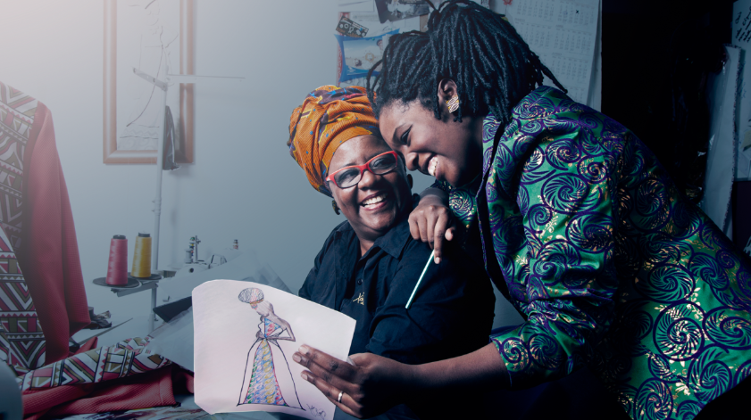

Quem disse que vestido de noiva é sempre igual? De olho nas mulheres que pensam “fora da caixinha”, o Ateliê Xongani desenvolveu o projeto Noiva Afro-Brasileira, que une os tecidos clássicos de alta-costura a bordados e aplicações típicos da moda africana.
A ideia do projeto surgiu a partir de conversas com clientes, que revelavam o desejo de ter um vestido de noiva contemporâneo, mas que de certa forma representasse a ancestralidade africana. “A nossa ideia de casamento é muito eurocentrada, a noiva é representada como uma verdadeira rainha. Ao construir o conceito do vestido, buscamos referências não nas escravas, mas nas rainhas africanas e em toda a sua beleza”, explicou Ana Paula Mendonça, uma das fundadoras da Xongani.
O resultado foi um vestido com bordados orgânicos e artesanais, sem brilho, mas rico em detalhes. Como as brasileiras não abrem mão do branco, o modelo foi feito em cetim italiano. O toque africano ficou por conta da aplicação de tecidos africanos com bordado de miçangas. A equipe viaja uma ou duas vezes por ano para garimpar tecidos em Moçambique e na África do Sul. “A gente busca várias referências de moda e costumes para criar cada acessório e roupas que fazemos aqui. Percebemos que as possibilidades multiplicam. A moda africana tem uma versatilidade muito grande. Você pode usar um colar na cabeça, como cinto, em um look amarrado… As peças podem ser desconstruídas”, explicou Ana Paula.
Para ela, o principal objetivo do projeto é fazer com que a cultura afro seja retratada nos momentos mais importantes da vida, permitindo que a mulher “esteja bonita com uma cultura que nem sempre foi valorizada”. Ana Paula ressaltou ainda que a marca não traz para o Brasil peças prontas, apenas tecidos e referências. “A moda africana não contempla a mulher brasileira. O Brasil é um país plural, com muitos estilos, muitas linguagens. Somos afro-brasileiras e não africanas. Por isso, nós não reproduzimos conceitos, mas repensamos a moda para adaptá-la à realidade das mulheres do nosso país”, disse. A marca já recebeu as primeiras encomendas do vestido de noiva e, diante do sucesso do projeto, pretende se aventurar ainda mais na moda festa. “No final do ano, já será lançado um segundo vestido, com um visual mais versátil, podendo ser usado tanto para noivas como para festas em geral”, Quem quiser um modelo exclusivo, pode ainda procurar o ateliê para a confecção de vestidos personalizados e sob medida.
Confira o vídeo: